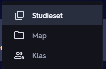
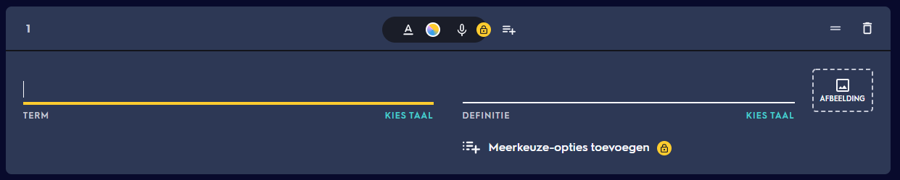
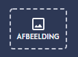

Hoe gebruik ik Quizlet? (quiz)
-

Studieset aanmaken stap 1
Na uw account aan te maken zou u deze knop moeten zien op uw scherm. Klik op deze knop om een nieuwe quiz aan te maken. -

Studieset aanmaken stap 2
Klik dan op "Studieset" om een nieuwe studieset aan te maken. -

Studieset aanmaken stap 3
Hier kan u uw nieuwe studieset een naam geven. Als u wilt kan u ook een beschrijving toevoegen. U kan eronder dan woorden en hun definitie toevoegen. -

Studieset aanmaken stap 4
Hier kan u een woord ingeven. De definitie van dit woord kan u op de lijn net boven "definitie" zetten. -

Studieset aanmaken stap 5
Als u wilt kan u afbeeldingen toevoegen. Dit kan u door op de knop "afbeelding" te drukken. Met de gratis versie kan u wel alleen naar afbelldingen die quizlet geeft zoeken. Als u uw eigen afbeeldingen wilt toevoegen zal u de plus versie moeten kopen.